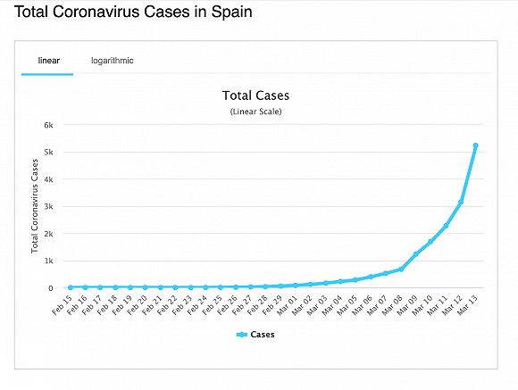
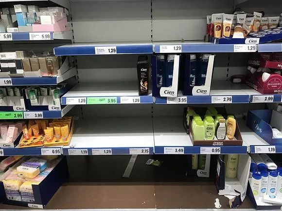

西班牙“封国”抗疫：4700万民众行动受限
原文链接 备份链接 从3月14日开始，西班牙进入国家紧急状态。根据西班牙宪法，国家紧急状态最多可持续15天，此后议会需要讨论并决定是否延长。多位接受《财经》记者采访的西班牙人称，他们现在只能祈求西班牙不会成为第二个意大利 2020年3 …
 2020年3月7日，西班牙巴塞罗那，19/20西甲联赛第27轮中，巴塞罗那凭借梅西的点球1比0击败皇家社会。图为他身后看台上的球迷。图片来源：视觉中国
2020年3月7日，西班牙巴塞罗那，19/20西甲联赛第27轮中，巴塞罗那凭借梅西的点球1比0击败皇家社会。图为他身后看台上的球迷。图片来源：视觉中国
记者：王磬 潘金花
“
从500例到5000例，韩国花了11天，意大利10天，而西班牙只用了7天。“我们现在仍以某种程度的自满来应对这场危机，而且显然不够给力。”
”
继意大利之后，西班牙也要面临“锁国”了。这一切似乎来得太快。
直到上周末，西班牙都还是跟往日一般歌舞升平。12万人在马德里市中心游行庆祝国际妇女节，8万球迷观看了国家德比足球赛，9000名政党的支持者在一处斗牛场内集会。
但在刚过去的这周里，疫情急转直下。3月14日，首相桑切斯宣布在西班牙全国实施“封城”措施，将于3月16日上午8点开始执行。法令要求，除了购买食物、医疗用品，去医院、工作或处理其他紧急情况之外，民众应避免外出。这是对此前封城措施的进一步升级，意味着4700万西班牙人将不得不待在家中。
来自瓦伦西亚、巴斯克、马德里的多位华人向界面新闻表示，目前在西班牙的基本生活尚未受到影响。在政府3月13日宣布紧急状态之后，超市里偶有生活物资断货现象，街上的行人比往常少了许多，但仍然很少有路人戴口罩。
截至当地时间3月14日晚，西班牙累计新冠肺炎确诊病例6393例，报告死亡病例195例。首相办公室也宣布，首相桑切斯的妻子贝戈尼娅确诊感染新冠病毒。
西班牙已成为意大利之外欧洲疫情最严重的国家，病例增长速度居各国之首。
从500例涨到5000例，韩国花了11天，意大利花了10天，而西班牙只花了7天。过去一周的暴涨也让西班牙的疫情超过了人口更多的德国和法国，跃居欧洲第二。

西班牙疫情走势。来源：worldometers
疫情最严重的是首都马德里，占据了全部确诊数量的一半和几乎三分之二的死亡病例。几家养老院发生了集聚性感染。马德里大区政府紧急评估了养老院的健康风险，并于3月8日关闭了其中的两家私人养老院。
3月11日起，马德里、巴斯克、拉里奥哈三个大区关闭了所有的学校、托儿所和老年人日托中心。3月12日，加泰罗尼亚地区封锁了多个小镇；3月13日，首相桑切斯宣布国家进入紧急状态。
西班牙最早的新冠病例确诊于1月底，是来自德国的输入性病例。但两人均很快隔离并治愈出院。2月13日，西班牙出现首例新冠肺炎病人死亡，但此人当时并未被确诊。
西班牙的前4例患新冠肺炎死者在生前都没有被确诊。这显示专家们对于病毒到达西班牙的时间有错误的评估。
西班牙政府由于防疫不力遭到了多方批评。
“是政客而不是专业人士来防疫。”马德里卫生部门工会副秘书长普恩特（Ángela Hernández Puente）对媒体表示，西班牙到现在仍然以某种程度的自满来应对这场危机，而且“显然不够给力”。
批评者称，政府没能更早地采取措施、限制大规模集会。
据西班牙《世界报》（El Mundo）报道，马德里大区政府共计批准了3月7日和8日的77次游行活动，其中55场游行发生在3月8日。
欧洲疾控中心（ECDC）3月2日就向有疫情爆发风险的成员国发出警告，避免非必须要的大规模集会。ECDC建议中有明确要求，作为“预防措施”，疫情期间“不应该举行超过千人参与的活动”。但是西班牙政府并没有接受这个建议，甚至以“追求平等”的名号鼓励民众走上街头。
极右翼政党Vox在上周末举行了9000人的集会。但后来三位参与了该集会的党内高层人士——包括党魁和党务秘书长——都确诊了新冠。此外，桑切斯政府中还有两名部长确诊。
这让人们担忧：决策者们到底知不知道该如何应对病毒？
《纽约时报》指出，尽管西班牙是欧盟里医疗条件最好的国家之一，它仍面临着防疫挑战：医疗保健主要掌握在大区政府而非中央政府手中。
首相桑切斯目前领导着一个左翼的少数政府，今年早些时候通过一场不令人满意的选举上台。卫生工会官员普恩特（Hernández Puente）说：“我们拥有非常好的西班牙卫生系统，但问题是该系统分散在17个大区之间，并经常受到政客的控制，而这些政客通常并非身穿同一种颜色的党服。”
来自瓦伦西亚大区的华人学生林威对界面新闻表示，从体制上看，西班牙有17个大区（区-省-市，三级），不同的决策需要不同的的政府作出。比如停课的决定需要由大区来做出，市里或学校都没有权力。
林威还告诉界面新闻，西班牙人和意大利人一样生性乐观，对自己的医疗系统很自信，这两个国家都有很高的人均预期寿命。大街上仍然很少有人戴口罩。
“在宣布了紧急状态之后，我的朋友们第一个想到的事情是赶紧趁着餐厅酒吧关门，最后喝一杯。”林威说。
巴斯克大区是受本次疫情影响最严重的大区。住在巴斯克大区圣塞巴斯蒂安的华人谢春晖对界面新闻表示，民众的基本生活还不太受影响。
她告诉界面新闻，巴斯克政府是3月12日下午1点宣布停课的，当天就有挺多人去超市买奶粉、洗洁精等等，但没有缺货。第一次看到超市缺货是13日下午，缺厕纸、抽纸、厨房用纸、新鲜水果蔬菜、肉类、面包、鸡蛋、洗手液、沐浴露。周六（14日）早上再去看已经基本补上货了。

巴斯克大区的超市里，卫生用品被抢购一空。来源：受访者供图
“封锁禁令会在周一生效。今天还是有人在街上溜达，但明显比平时冷清。”谢春晖说。
未经授权 禁止转载

原文链接 备份链接 从3月14日开始，西班牙进入国家紧急状态。根据西班牙宪法，国家紧急状态最多可持续15天，此后议会需要讨论并决定是否延长。多位接受《财经》记者采访的西班牙人称，他们现在只能祈求西班牙不会成为第二个意大利 2020年3 …
原文链接 备份链接 根据当地时间3月8日18时意大利卫生部公布的最新数据，意大利现有新冠病毒患者6387例，死亡366例，治愈622例，累计确诊感染新冠病毒总人数为7375例，较3月7日18时新增1492例，新增133例死亡病例。 据外 …
原文链接 备份链接 体坛周报特约记者吴家驹华盛顿报道 2月3日，在通道找比尔为中国录祝福的自己，完全不会想到：37天后的NBA，会因为疫情而停摆。也想不到自己短暂的生涯，可能会以这种方式结束。 全球第一例感染者至今无从考证，进入2020年 …
原文链接 备份链接 现在欧洲应该是下决心防疫的时候了 3月3日，在意大利布雷西亚，医务人员在医院外搭建的帐篷中工作。图/新华 在欧洲疾病预防控制中心（ECDC）公布的《COVID-19在欧盟/欧洲经济区和英国的地理分布》图上，象征新冠 …
原文链接 备份链接 【财新网】（记者 卿滢）3月9日，意大利宣布全国各地进入“封城”，欧洲全境内的新冠肺炎疫情也进一步加剧；西班牙一夜之间确诊人数翻倍，法国文化部长和瑞典央行副行长感染。随着塞浦路斯确诊首例患者，疫情已经扩散至欧盟全境27 …